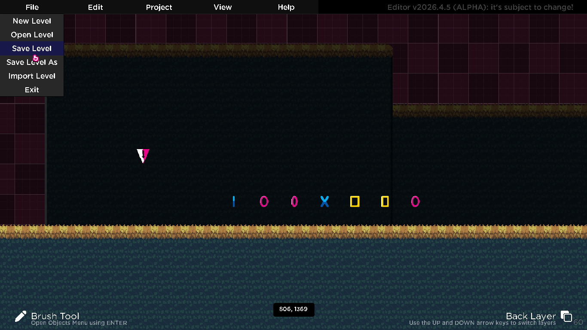
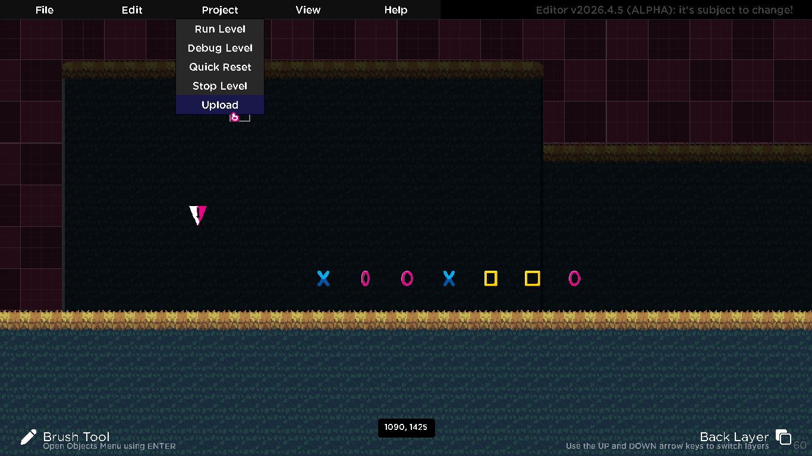
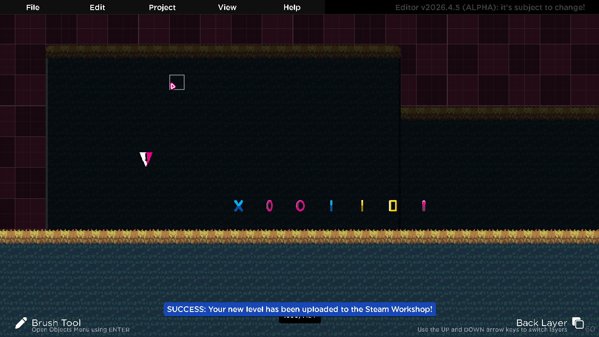
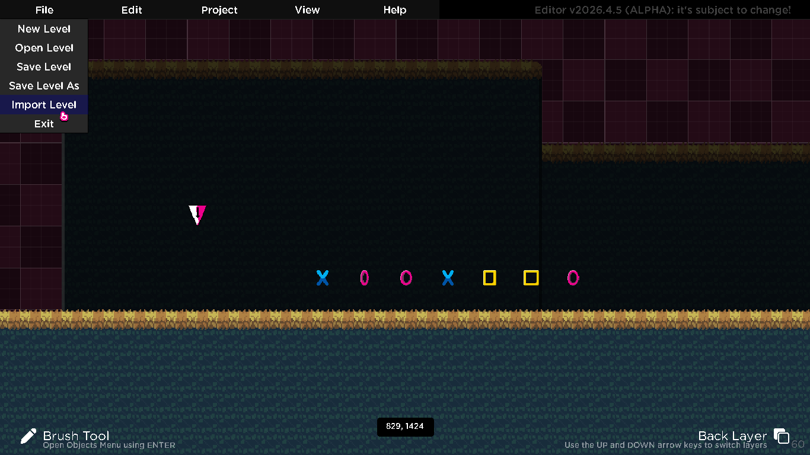
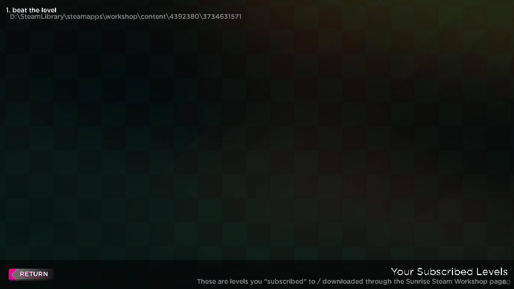
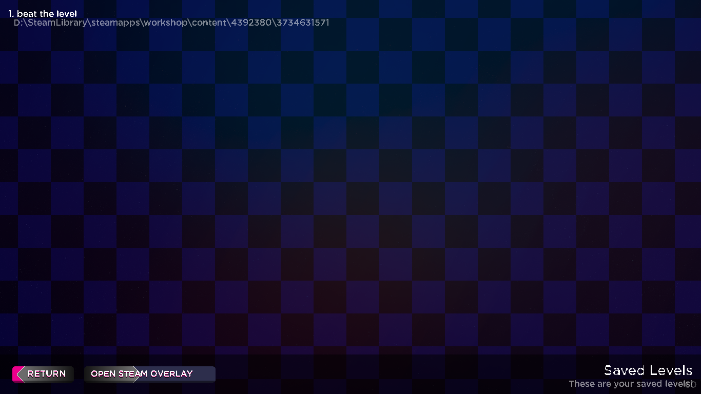

Sunrise: Workshop Guide
Uploading Levels
In Sunrise, you can create levels using the Sunrise Editor. However, the focus of Sunrise's Editor is the ability to share your creations, so let's run through how to upload your levels to the Sunrise Steam Workshop page.
Please note, this only applies to Steam users, itch.io users will be recieving online functionality in Sunrise Beta, as they require dedicated servers.
To start, you have to have saved your level first. You can do that using the "Save Level" or "Save Level As" buttons in the Editor.

From there, you can open the "Project" dropdown and select "Upload". The game will do the magic here, it'll take a 1:1 aspect ratio screenshot of your level in the Editor, fill out all of the details automatically including the Workshop Item name (based on the level's set name).


This is what you should see, and from there. You don't have to worry about anything. Your level has been successfully uploaded to the Steam Workshop!
Importing Levels
Levels you've subscribed to on the Steam Workshop can also be imported directly into the Level Editor for you to inspect yourself!
You can enter the Import menu by opening the "File" dropdown, followed by "Import Level".

You should see this screen, showing your subscribed levels and their respective file locations.
You can automatically uninstall and unsubscribe from Workshop content in-game using right-click on any of the entries shown.

From here, just click an item and the game will import it as "read-only" mode. If you want to edit it, you must save the level yourself using "Save Level" in the "File" dropdown.
Playing Workshop Levels
Finally, an integral part of Sunrise is actually playing the levels. If you want to play subscribed levels without dealing with the hassle of the Sunrise Editor, you can simply visit the "Connect" menu, via its respective button in the Main Menu.
This is what you should see upon opening the Connect Menu.

The steps are very similar to last time, you can automatically uninstall and unsubscribe from Workshop content in-game using right-click on any of the entries shown, and you can play levels using left-click.